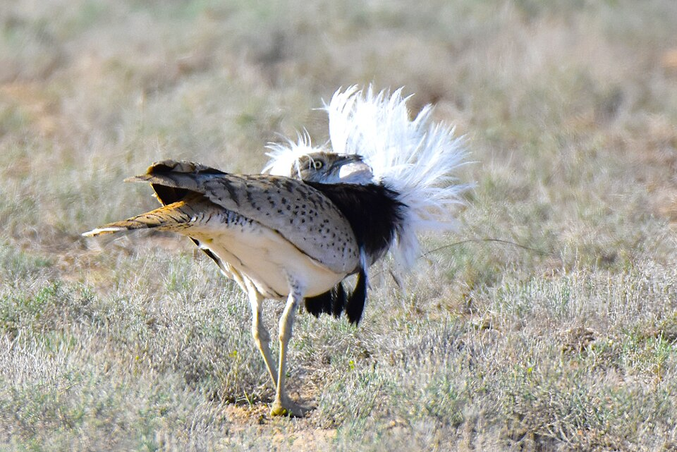
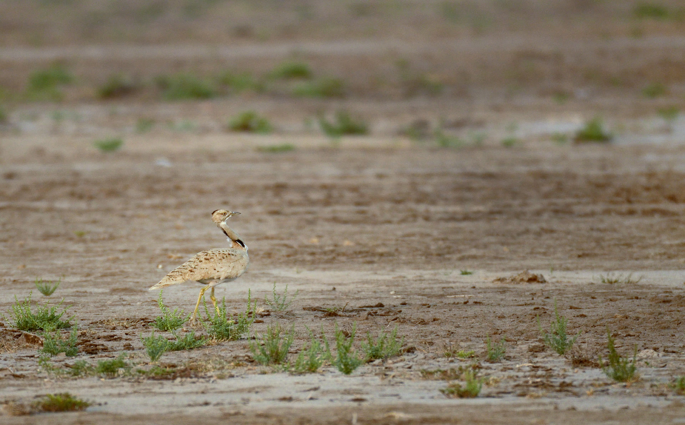

الحبارى (الحبارى الآسيوية / حبارى ماكوين) — Chlamydotis macqueenii
الحضور: طائر صحراوي رشيق من عائلة الحباريات. نطاقه من شرق سيناء عبر إيران وآسيا الوسطى حتى صحراء غوبي في منغوليا؛ جماعات شمالية مهاجرة جزئيًا تشتّي جنوبًا نحو باكستان وغرب الهند وأجزاء من الجزيرة العربية. في بلاد الشام كان وجوده أوسع تاريخيًا في السهوب الجافة؛ اليوم نادر أو عابر في السياق اللبناني مقارنةً بمهاجري التحليق. هذه البطاقة تثبّت Chlamydotis macqueenii فقط. الحبارى الأفريقية Chlamydotis undulata — شمال أفريقيا وجزر الكناري — نوع منفصل فُصل تصنيفيًا عام 2003، وأبهت لونًا مع اختلاف ريش القمة أثناء العرض؛ نطاقها مغاربي لا آسيوي–شامي، ولا تُخلط مع النوع المعتمد هنا.
دورة الحياة والموائل: الذكر يعرض عرضًا بصريًا مميزًا: ينفخ ريش العنق ويطوي الرأس ضمن «ياقة»، ويركض في خطوط أو دوائر حول الشجيرات. التزاوج متعدد الإناث من جهة الذكر؛ الأنثى وحدها ترعى العش. تضع عادةً 2–4 بيضات في حفرة مكشوفة؛ الحضانة نحو 23 يومًا. الكتاكيت مبكرة النمو تتبع الأم. يفضّل الصحارى والسهوب الجافة ذات الغطاء الشجيري المتناثر؛ غذاء مختلط من بذور وتوت وحشرات، ويستطيع الاستغناء عن شرب ماء حرّ إن كفت رطوبة الغذاء.
أسلوب الحياة: حذر، يعتمد التمويه والجلوس المنخفض عند الاقتراب. عند الملاحقة يرفع ويحلق حلزونيًا. حسّاس لاضطراب التعشيش من الإنسان والماشية. مسارات الهجرة تتجنّب أعلى السلاسل الجبلية كما أظهرت أجهزة التتبع؛ موسم التكاثر مرتبط بدرجات الحرارة المحلية لانطلاق الهجرة الربيعية.

وضع الصيد: في البلاد العربية تُحمى الحبارى الآسيوية في الغالب ويُقيَّد صيدها بشدّة؛ وهي نوع مهدَّد عالميًا. في لبنان يحصر قانون الصيد البرّي رقم 580/2004 الصيد بطرائد يحدّدها الوزير، وما عداها محمية على مدار السنة؛ الحبارى ليست من الطرائد المسموح بها في غياب قرار افتتاح موسمي ساري. استثناءات موثّقة ضمن أطر الصقارة المرخَّصة فقط: في قطر أدرج القرار الوزاري رقم 7 لسنة 2026 الحبارى ضمن الأنواع المسموح بصيدها بالصقار فقط خلال فترة محدّدة (1 أيلول/سبتمبر 2026 – 15 شباط/فبراير 2027)، مع حظر أجهزة محاكاة النداء (بيان وزارة البيئة والتغيّر المناخي عبر وكالة الأنباء القطرية). في إمارة أبوظبي، وفي إطار الصقارة التقليدية المرخَّصة وفق قرار المجلس التنفيذي 5/2021 وإعلانات هيئة البيئة – أبوظبي، يُصرَّح للحبارى للصقارين المرخّصين ضمن مواسم محدّدة — دون تعميم أن كل مسارات الصيد في الإمارة محصورة بالحبارى.
وضع الحفظ: مهدّد / Vulnerable (VU) عالميًا لدى الاتحاد الدولي لحفظ الطبيعة (تقييم BirdLife 2021)، بسبب تراجع مرتبط بالصيد وتدهور الموائل. مدرج في CITES الملحق I وCMS الملحق II. برامج الإكثار والإطلاق جزء من الاستجابة الحفظية في أجزاء من النطاق.
سمات: عرض الذكر سلوك تزاوج موثّق لا رقصة مخترعة: ريش عنق يُطوى حتى يغطي الرأس، وخطو موزون، وصوت تنفّس خافت يُسمع من قرب فقط. قدرة الاستغناء عن الماء الحرّ تكيّف صحراوي حقيقي. أيقونة تراث صقارة ومسؤولية حفظ معًا.


_male_courtship,_Kazakhstan.jpg){kind=link}